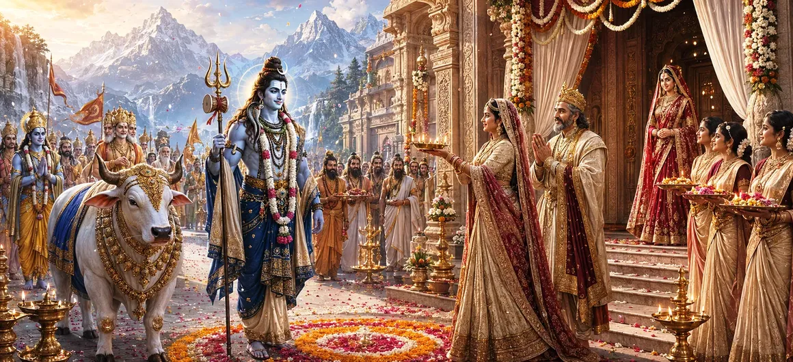

दिव्य विवाह का शुभ दिन आ गया था। दिव्य उत्सवों और तैयारियों के बाद, भगवान शिव सर्वोच्च दूल्हे के रूप में विवाह स्थल पर पहुंचे। देवता, ऋषि, गंधर्व और स्वर्गीय प्राणी उनके साथ थे, जिसने इस अवसर को तीनों लोकों में अब तक देखी गई सबसे शानदार घटनाओं में से एक में बदल दिया।
जैसे ही बारात हिमालय के महल के करीब पहुंची, हवा में दिव्य संगीत गूंज उठा। शंख, ढोल और पवित्र मंत्र पहाड़ों में गूँज उठे। संपूर्ण क्षेत्र दिव्य आनंद एवं आध्यात्मिक तेज से परिवर्तित नजर आया।
भगवान शिव अपने भव्य और शुभ रूप में प्रकट हुए। दिव्य आभूषणों और दिव्य तेज से सुशोभित, उन्होंने अथाह अनुग्रह और महिमा बिखेरी। प्रत्येक प्राणी जिसने उन्हें देखा, उनके हृदय में भक्ति और आश्चर्य उत्पन्न हुआ।
राजा हिमालय ने परम भगवान के योग्य भव्य स्वागत की व्यवस्था की थी। मार्गों को फूलों, पताकाओं और शुभ चिन्हों से सजाया गया था। पुजारी, ऋषि और परिचारक पवित्र परंपरा के अनुसार दिव्य दूल्हे का स्वागत करने के लिए तैयार खड़े थे।
शिव की सच्ची महिमा देखने के बाद, मैना ने अब पूरी भक्ति और सम्मान के साथ उनका स्वागत किया। वह डर और अनिश्चितता जो एक बार उसे परेशान करती थी, पूरी तरह से गायब हो गई थी, उसकी जगह श्रद्धा और मातृ स्नेह ने ले ली थी।
दूल्हे के आगमन को देखने के लिए अनगिनत देवता, ऋषि, सिद्ध और दिव्य प्राणी एकत्रित हुए। वे समझ गए कि यह महज एक शादी नहीं बल्कि एक लौकिक घटना है जिसका महत्व युगों-युगों तक बना रहेगा।
प्रभु का आगमन हर हृदय में भक्ति का संचार करता है।
विनम्रता के साथ ईश्वर का स्वागत करना ही पूजा का एक कार्य है।
शिव और पार्वती का विवाह पूरी सृष्टि में मनाया जाता है।
जैसे ही भगवान शिव पहुंचे, प्राचीन परंपरा के अनुसार स्वागत का पवित्र संस्कार किया गया। दीपक लहराये गये, मंगल स्तोत्र गाए गए और गहन भक्ति के साथ फूल और चंदन का लेप अर्पित किया गया।
महल में एकत्रित लोग प्रशंसा और विस्मय से शिव की ओर देखने लगे। उनकी दिव्य उपस्थिति हर वर्णन से बढ़कर थी, और कई लोगों को लगा कि उनकी चमक के आगे स्वर्ग का वैभव भी फीका लग रहा था।
अब दूल्हे का स्वागत किया गया और उसे सम्मान में बैठाया गया, सभी उपस्थित लोगों के दिलों में प्रत्याशा भर गई। पवित्र विवाह संस्कार शुरू होने वाले थे, जो भक्ति और नियति की लंबी यात्रा को पूर्णता की ओर ले जा रहे थे।
दिव्य दूल्हे का आगमन भक्तों को याद दिलाता है कि भगवान उन लोगों के जीवन में प्रवेश करते हैं जो विश्वास और भक्ति के साथ धैर्यपूर्वक प्रतीक्षा करते हैं। प्रत्येक आध्यात्मिक यात्रा अंततः एक पवित्र क्षण तक पहुँचती है जब दैवीय कृपा दृष्टिगोचर होने लगती है।
शिव का सम्मानपूर्वक स्वागत होता देख देवता प्रसन्न हुए। उन्होंने पवित्र विवाह की सफलता के लिए प्रार्थना की और उस नियति की प्रशंसा की जिसने दिव्य जोड़े को एक बार फिर साथ ला दिया।
सारी तैयारियाँ अब अपनी समाप्ति पर पहुँच चुकी थीं। दूल्हा आ गया था, मेहमान इकट्ठे थे और शुभ घड़ी निकट आ गई थी। पवित्र विवाह समारोह शुरू होने के लिए तैयार था।
"जब ईश्वर का आगमन होता है, तो हर हृदय एक मंदिर बन जाता है और हर पल पवित्र हो जाता है।"
भगवान शिव अब दिव्य दूल्हे के रूप में आ गए हैं और हिमालय, मैना और इकट्ठे हुए देवताओं द्वारा सम्मान के साथ उनका स्वागत किया गया है। शुभ घड़ी आ गई है और विवाह के पवित्र संस्कार शुरू होने वाले हैं। पवित्र विवाह समारोह का गवाह बनने के लिए अगले अध्याय को जारी रखें।